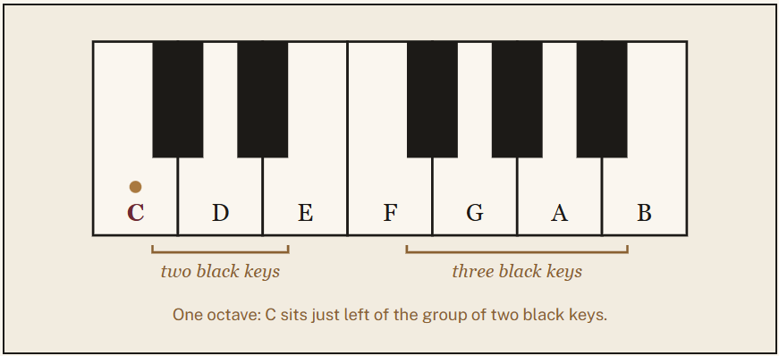

Lesson one
Getting to know the keyboard
Before you play a single song, get comfortable with how you sit, how your hands rest, and how the keys themselves are arranged.
Sit at the right height
Your forearms should be roughly level with the keys, elbows slightly higher than your wrists. Sit toward the front edge of the bench so your feet rest flat on the floor or pedals.
Curve, don't flatten
Rest your fingertips on the keys with a relaxed curve, as if you were holding a small ball. Avoid locking your fingers straight or collapsing at the knuckle.
Number your fingers
Both thumbs are finger 1, moving out to the pinky as finger 5. Sheet music uses these numbers to tell you which finger plays which note.
The repeating pattern
A full-size piano has 88 keys, but there's no need to memorize them one by one. The keyboard is built from a single 12-key pattern — 7 white keys and 5 black keys — repeated up and down its length.
- The black keys always appear in groups of two, then three.
- The white key just to the left of a group of two black keys is always C.
- Everything else on the keyboard can be found relative to that C.

Your first exercise
Find every C on the keyboard using the two-black-key groups. Play each one with your right thumb, low to high, saying "C" out loud each time. This trains your eye to read the pattern instead of counting keys one at a time.